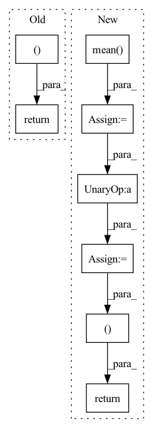

Pattern ID :1797

Before Change
encoding_indices = soft_one_hot.argmax(dim=1)
return z_q, loss, (None, None, encoding_indices)
After Change
encoding_indices = soft_one_hot.argmax(dim=1)
encodings = F.one_hot(encoding_indices, self.num_tokens).type(z.dtype)
avg_probs = torch.mean(encodings, dim=0)
perplexity = torch.exp(-torch.sum(avg_probs * torch.log(avg_probs + 1e-10)))
return z_q, loss, (perplexity, encodings, encoding_indices)
In pattern: SUPERPATTERN
Frequency: 3
Non-data size: 8
Instances
Fragment ID: 13068695
Project Name: tgisaturday/dalle-lightning
Commit Name: 39e8b24fa405a4320d7c683e7054ae18ef4563f4
Time: 2021-07-28
Author: jamesk1228@gmail.com
File Name: pl_dalle/modules/vqvae/quantize.py
M Class Name: GumbelQuantizer
N Class Name: GumbelQuantizer
M Method Name: forward(2)
N Method Name: forward(2)
M Parent Class: nn.Module
N Parent Class: nn.Module
M File Name: pl_dalle/modules/vqvae/quantize.py
N File Name: pl_dalle/modules/vqvae/quantize.py
M Start Line: 127
M End Line: 135
N Start Line: 127
N End Line: 138
'>
Before Change
)
)
return tight_loss, logs
def get_distortion(self, Y_hat, targets):
raise NotImplementedError()
After Change
// E_x[...]. shape: shape: []
rate = rate.mean(0)
distortion = distortion.mean(0)
loss = distortion + self.beta * rate
logs.update(
dict(
loose_loss=loose_loss / math.log(BASE_LOG),
loss=loss / math.log(BASE_LOG),
rate=rate / math.log(BASE_LOG),
distortion=distortion / math.log(BASE_LOG),
)
)
return loss, logs
def get_distortion(self, Y_hat, targets):
raise NotImplementedError()
'>
Fragment ID: 13068693
Project Name: yanndubs/lossyless
Commit Name: 0a24755494712f360cfbc0e8b8ac9f6907157997
Time: 2020-12-04
Author: yanndubois96@gmail.com
File Name: lossyless/losses.py
M Class Name: Loss
N Class Name: Loss
M Method Name: forward(4)
N Method Name: forward(4)
M Parent Class: nn.Module
N Parent Class: nn.Module
M File Name: lossyless/losses.py
N File Name: lossyless/losses.py
M Start Line: 35
M End Line: 53
N Start Line: 30
N End Line: 59
'>
Before Change
mel_loss + kl_loss + postnet_loss + duration_loss
)
return (
total_loss,
mel_loss, // L_VG
kl_loss, // L_KL
postnet_loss, // L_PN
duration_loss, // L_dur
)
After Change
elif self.helper_type == "ctc":
for alignment_logprob in alignment_logprobs:
ctc_loss += self.sum_loss(alignment_logprob, src_lens, mel_lens)
ctc_loss = ctc_loss.mean()
helper_loss = (self.ctc_weight_start if step <= self.ctc_step else self.ctc_weight_end) * ctc_loss
total_loss = (
mel_loss + kl_loss + postnet_loss + duration_loss + helper_loss
)
return (
total_loss,
mel_loss, // L_VG
kl_loss, // L_KL
postnet_loss, // L_PN
duration_loss, // L_dur
helper_loss,
)
'>
Fragment ID: 13068696
Project Name: keonlee9420/portaspeech
Commit Name: 814cdda1ebf7dc626708db2bcf20fdb9207f4345
Time: 2022-02-13
Author: keonlee9420@gmail.com
File Name: model/loss.py
M Class Name: PortaSpeechLoss
N Class Name: PortaSpeechLoss
M Method Name: forward(4)
N Method Name: forward(3)
M Parent Class: nn.Module
N Parent Class: nn.Module
M File Name: model/loss.py
N File Name: model/loss.py
M Start Line: 80
M End Line: 100
N Start Line: 59
N End Line: 127